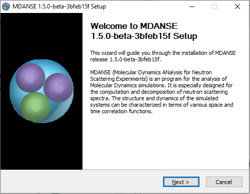
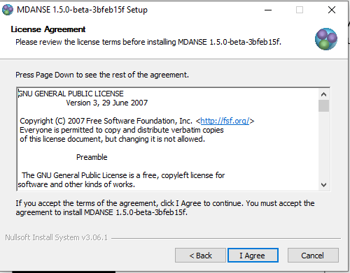
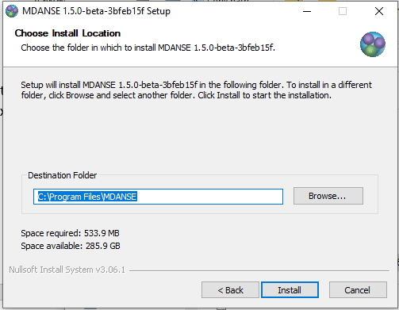
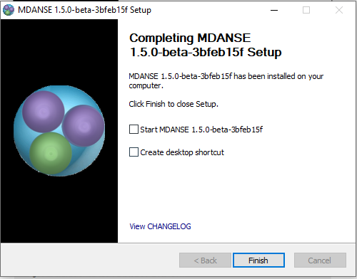

4. Installing MDANSE
MDANSE can be downloaded from https://mdanse.org/downloads/. It is a platform-specific installer that can be used directly and without any other software. The package that gets installed comes with all the necessary libraries and files that MDANSE requires to run. New versions of MDANSE are released after sufficient changes are made, but in the meantime MDANSE can be built from source. Instructions for doing that are given in Appendix 4. Some beta versions may also be generated by our continuous integration [2].
4.1. Windows
Installing MDANSE on Windows is straightforward. Once downloaded, you will get MDANSE.exe file which can be run like any other exe installer. If you want to install MDANSE, you need to have administrator privileges, ie. Windows will ask you if you really want to install the software, and you might need to enter your password. When that is done, you will see a welcome screen, followed by a license agreement.
 {kind=link}
{kind=link}
The default installation location is in C:\Program Files\MDANSE, but it can be changed to any location. Once you select next, the installation will start, which may take a while.
{kind=link}
Finally, you will see a screen where you can select some extra options. If you want to have a desktop shortcut, don’t forget to check the box. The ‘View CHANGELOG’ link at the bottom will open CHANGELOG.txt file where you can see what has changed.
{kind=link}
4.2. MacOS
Since version 1.5.1, MDANSE installer for MacOS comes with a README.txt file that will be unzipped together with the MDANSE.dmg installer once you download MDANSE. Inside are the installation instructions as well as instructions for using MDANSE from the command line. Despite the aid however, MDANSE can be installed like any other DMG file:
Double click the DMG file. A window should open.
Drag the MDANSE icon onto the folder icon.
Wait for copying to finish.
Eject the DMG and delete it.
Once that is done, MDANSE will be installed in /Applications, and so you can run it like other applications. However, since we are not registered with Apple, you might have to go through some extra steps to run. For that purpose, the guides in Ref [3] and Ref [4] might be of help.
4.3. Linux
We provide MDANSE.deb installer, so if your system is Debian-based, you can directly use this like any other DEB package:
Un-tar the tarball.
In terminal run (make sure to use the correct path and full name of the DEB file):
sudo apt install ./MDANSE.deb
Apt will install any missing dependencies, so once you approve when prompted and wait for installation to finish, you can start the MDANSE either from terminal or from applications list.
If you use a system that does not support DEB natively, you will most likely have to build MDANSE from source code. Feel free to try using conversion packages, such as Alien, but we have not been able to make this work. Instructions on building from source are in Appendix 4 and issue #8 on our GitHub.[5] If you are still facing difficulties, do not hesitate to contact us!